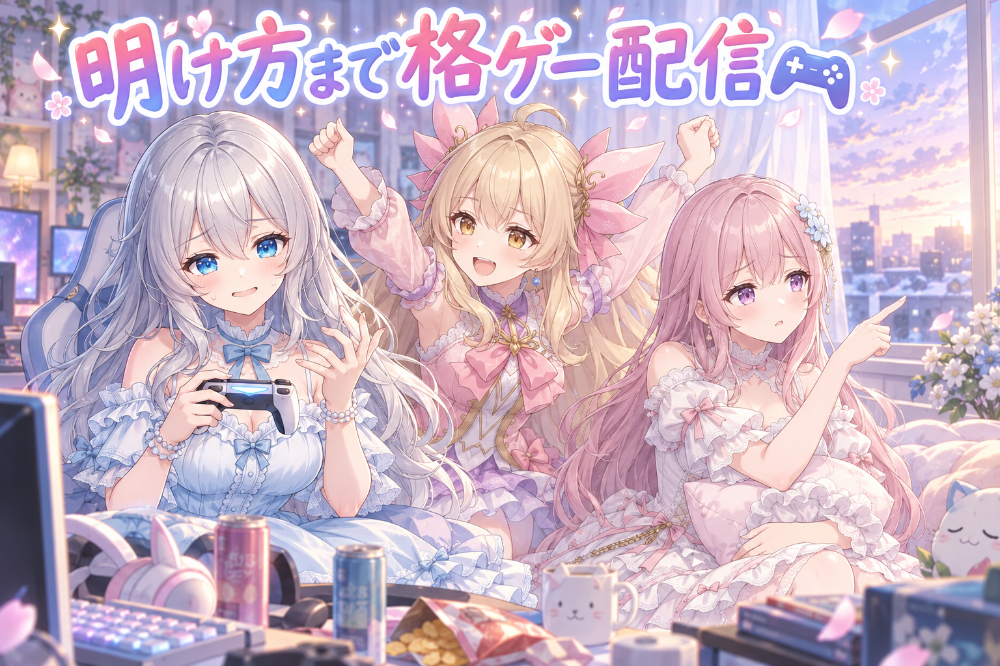
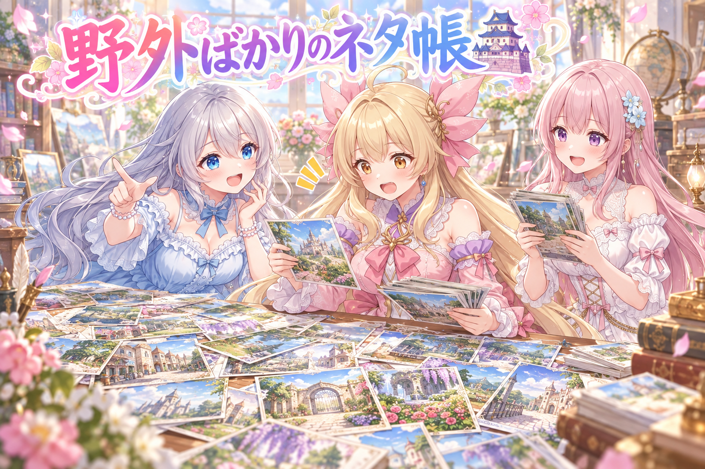
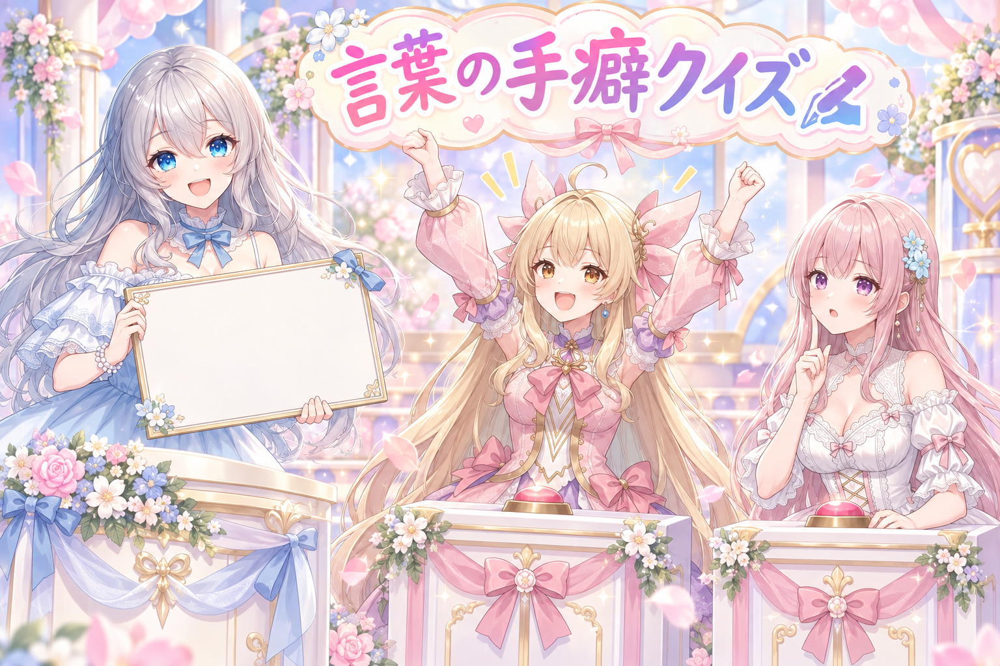
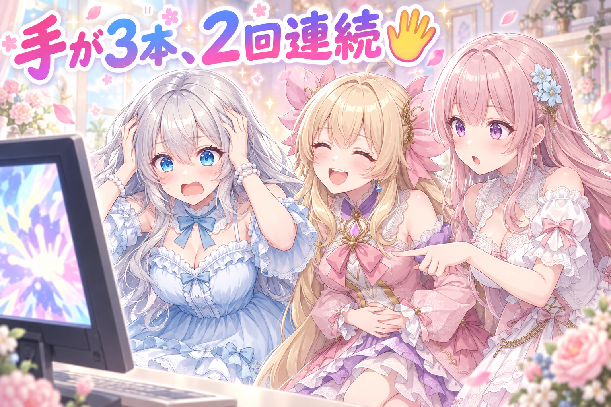
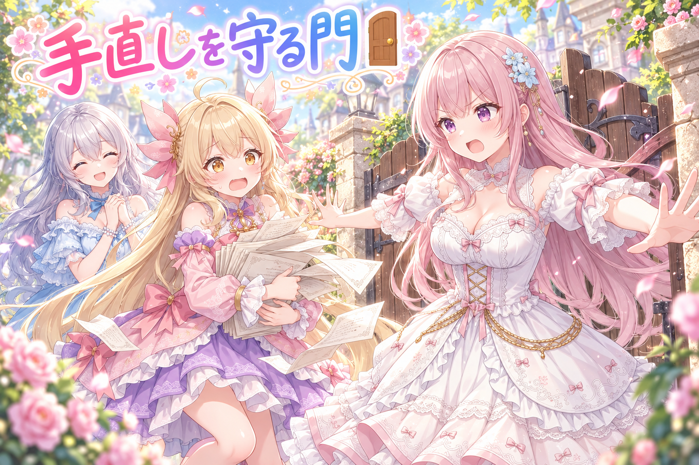
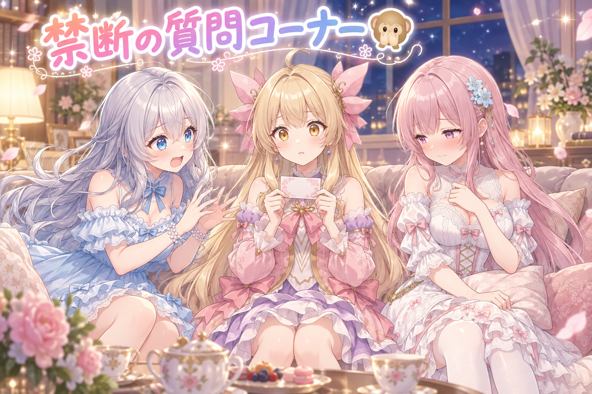

📌 3行まとめ
- ブログの挿絵を2枚だけ描き直したが、2回とも同じ場所が壊れて不採用になった
- ネタ帳の場面が野外に偏っていたので、城・お祭り・街・室内・工房などを手書きで数十本追加した
- 毎回つい使ってしまう決まり文句を場面に合う言葉へ入れ替え、偏りの警告をゼロにした

ルピナス （笑顔）
はい、AI Bloom Sisters のゆるい作業中継、今日もこっそり開店しました。進行のルピナスです。

アイリス （大笑い）
こっそりって言いながら毎日やってるじゃん！アイリスだよー！

フィオナ （ふつう）
フィオナです。前回は、検査の表示が緑だったので安心していたら、中身をちゃんと見ていなかった……というお話でしたね。

ルピナス （考え中）
うん、あれは反省した。で、今日はその続きみたいな日。緑を疑うんじゃなくて、赤が出てる場所を全部つぶしに行った一日です。

アイリス （びっくり）
あと、お姉ちゃんの手が3本になった日でもあるよね！

ルピナス （あわあわ）
オープニングでそれ言う!?後半まで取っておいて!
1. 🎮 久々の格ゲー配信、終わったのは明け方

昨夜は久しぶりに格闘ゲームの配信をしました。タイトルは『グランブルーファンタジーヴァーサスライジング』、初見さんも久々の方も歓迎の回です。配信の告知文には、ゲーム名・使うキャラの候補・そして参加前に読んでほしい注意事項へのリンクを先に置いています。初めて来た人が「何をしている配信なのか」「自分は参加していいのか」を、本文を読む前に判断できるようにするためです。
ただ、今回いちばんの反省点は終了時刻でした。作業の続きを始めたのが明け方。楽しかったのは本当ですが、ここは素直に反省しておきます。最新の配信のお知らせは X（https://x.com/irisfionaAIBS）をご覧ください。

アイリス （笑顔）
久しぶりの格ゲーどうだったー？勝った？

ルピナス （大笑い）
勝った負けたの前に、まず指が昔の動きを覚えてなかった。頭では出せるのに、手が置いていかれる感じ。
フィオナ （ふつう）
久しぶりの操作は、頭の記憶より指の記憶のほうが先に薄れるそうですよ。知識は残っていても、身体の手順が抜け落ちるんです。
アイリス （大笑い）
じゃあ毎日やればいいじゃん！毎晩やろ！

フィオナ （しょんぼり）
……アイリスちゃん、それは反対です。今回、配信が終わったのは空が白み始めた頃でした。毎晩そんな時間まで、は無理です。

ルピナス （ふつう）
私も自分で言うけど、あれは長すぎた。楽しい時ほど時計を見なくなるから、次は終わりの時間を先に決めてから始める。

フィオナ （笑顔）
はい。お姉ちゃんが自分で言ってくれたので、わたしは何も言いません。……言いませんけど、ちゃんと寝てくださいね。
📝 ポイント（初心者向け解説・技術メモ・まとめ）
- 初心者向け解説：配信のタイトルと説明文は、お店の看板と入口の張り紙みたいなものです🌸「何のお店か」と「入る前に読んでね」を外に出しておくと、初めての人が安心してドアを開けられます。
- 技術メモ：告知テンプレは冒頭にルールページへの導線→挨拶→ゲーム名→使用キャラ候補の順で固定。初見判断に必要な情報が本文スクロール前に収まる並びにしている。
- ひとことまとめ：入口の案内は、本文より先に置く。
2. 🏯 ネタ帳の場面が、野外ばかりだった

私たちは、絵を作るときの「場面のネタ帳」をキャラごとに持っています。どんな場所で、どんな服で、どんな構図か——その組み合わせをあらかじめ書き溜めておく台帳です。ここに偏りの検査をかけたところ、野外の場面と私服の割合が警告ラインを超えていました。放っておくと、毎日どこかの屋外に立っているだけの絵が並びます。
そこで、提案されたジャンル案を全部採用して、場面を手書きで足しました。城、お祭り、現代の街、室内、湯どころ、水族館、映画館、駅、工房、スーパー。合わせて数十本。結果、野外と私服の警告は消えて、縦長構図の割合も半分手前でわずかに下がりました。
アイリス （びっくり）
ねえ見て、ネタ帳めくってもめくっても外！外！また外！
ルピナス （大笑い）
実況中継みたいになってる。はい、こちら現場のアイリス選手、ただいま野外の札を数えております。
アイリス （笑顔）
現場のアイリスです！ただいま公園、河原、海辺、丘、また河原！河原多すぎ！

フィオナ （考え中）
検査でも、野外の割合が赤く出ていました。人の目より先に数字が気づいてくれた形です。
ルピナス （ふつう）
で、ここから追加作業。フィオナ、新しい札の読み上げお願い。
フィオナ （笑顔）
はい。お城の回廊、夏祭りの屋台、夜の駅のホーム、映画館の座席、工房の作業台、スーパーの惣菜コーナー……。

アイリス （衝撃）
待って、惣菜コーナー!?あたしたち惣菜コーナーで何するの!?
フィオナ （ふつう）
半額シールが貼られる瞬間を待ちます。
アイリス （大笑い）
生活感!!でもわかる、あれ待つよね!
ルピナス （考え中）
いや、それが大事なんだよ。城とかお祭りみたいな派手な場所だけ足すと、今度は「非日常ばっかり」って偏りができる。地味な室内を混ぜるから均される。

アイリス （考え中）
偏りを直すのに、また偏らせちゃダメってこと？むずかしー！
フィオナ （笑顔）
はい。今回は屋内と現代の場面を多めに入れたので、野外の警告も、私服の警告も消えました。縦長の構図の割合も、半分をわずかに切ったところまで下がっています。

ルピナス （ウインク）
わずかに、ね。劇的には変わらない。こういうのは一日で直すものじゃなくて、毎日ちょっとずつ薄める作業。
📝 ポイント（初心者向け解説・技術メモ・まとめ）
- 初心者向け解説：作る絵の場面は、毎日のごはんの献立と同じです🍚 好きなメニューだけ並べると、気づいたとき食卓が茶色一色になります。意識して副菜を足すと、全体の見た目が変わります。
- 技術メモ：場面台帳にジャンル分類のカウントを持たせ、特定カテゴリが閾値を超えたら警告する。追加は派手なジャンルだけでなく屋内・日常系を同量入れて分布を均す。今回は縦長構図の比率も48%台前半まで低下。
- ひとことまとめ：偏りは足して直す。減らして直そうとしない。
3. ✍ 決まり文句が、絵の中身を押しのける

絵を作るとき、AI に渡す言葉には「手癖」が出ます。頬の赤み、きらめき、光の粒、輪郭の逆光——どれも便利なので、気づくと全部の指示に入っています。実際に集計したら、同じ語がネタ全体の4割を超えていました。
問題は2つあります。ひとつは、どの絵も同じ雰囲気になること。もうひとつは、便利な語が枠を食べて、その場面ならではの言葉が入らなくなることです。今日はこの手癖の語を、それぞれ30件ほどずつ、場面に合う具体的な言葉へ書き換えました。さらに、今の作り方ではもう効いていない語も見つけたので、生きている語へ置き換えています。結果、4割を超えていた語はゼロになりました。
ルピナス （笑顔）
はい、ここでクイズです。私たちが絵の指示にいちばん多く入れてしまっていた言葉は何でしょう？
フィオナ （考え中）
頬の赤み、でしょうか。集計では、ほぼどのネタにも入っていました。

ルピナス （びっくり）
正解。頬の赤み、きらめき、光の粒。この3つが常連で、多い語は4割超え。

アイリス （無表情）
え、でもさ、それ入ってた方がかわいくない？入れとけばよくない？
フィオナ （しょんぼり）
そこは反対です、アイリスちゃん。光の粒を全部の絵に散らすと、お祭りの絵も、工房の絵も、駅の絵も、同じ空気になってしまいます。

アイリス （怒り）
えー、でも消したら地味になるじゃん！
フィオナ （ふつう）
消すのではなく、置き換えるんです。工房なら火の粉、駅なら蛍光灯の反射、お祭りなら提灯の灯り。どれもその場所にしかない光です。
アイリス （びっくり）
……あー！光をやめるんじゃなくて、その場所の光にするのか！
ルピナス （大笑い）
そう。今日はそれを、語ごとに30件ずつくらい書き換えた。地味な手作業だけど、これが一番効く。
フィオナ （考え中）
あと、今の作り方ではもう効かなくなっていた語も見つかりました。書いてあるのに何もしていない言葉です。
アイリス （衝撃）
働いてないのに席に座ってるやつ!?
ルピナス （ふつう）
そう。しかも「入れてるから大丈夫」って思わせてくる分、いないより厄介。全部入れ替えました。
📝 ポイント（初心者向け解説・技術メモ・まとめ）
- 初心者向け解説：便利な言葉は、料理でいうマヨネーズです🥄 何にかけても美味しいけれど、全皿にかけると全部マヨの味になります。その料理の味付けに替えると、一皿ずつ違う味になります。
- 技術メモ：プロンプト語の出現率を定期集計し、40%超の常用語（blush / sparkle / light particles 等）を場面固有の描写へ一括置換。現行モデルで効果の薄い語（rim lighting 等）も棚卸しして生きた語へ差し替える。
- ひとことまとめ：手癖の語は消すのではなく、その場所の言葉へ置き換える。
4. 👀 今日のやらかし：手が3本、2回連続

前日分のブログ挿絵のうち、気に入らなかった2枚を描き直しました。結果は、2枚とも不採用。特に大喜利の場面のルピナスは、2回焼き直して2回とも手が3本生えていました。同じ条件で作り直しても、同じ場所が同じように壊れる——これは今日の実測です。
1回目を偶然と思って同じやり方で作り直したのが失敗でした。壊れ方が再現するということは、指示か構図のどこかに原因があるということです。どう直すかはまだ試していないので、そこは明日以降の宿題にします。
アイリス （大笑い）
お待たせしました、本日のメインイベント、お姉ちゃん三本目の手ー！
ルピナス （あわあわ）
待ってない待ってない。あのね、1枚目が失敗したから、もう一回焼いたんだよね。そしたらね……

ルピナス （衝撃）
同じところ!!全く同じところ!!
アイリス （笑顔）
すごいじゃん、再現性ばっちりだよ！研究って再現するのが大事なんでしょ？
ルピナス （ふつう）
うれしくない再現性がこの世にあるって、今日初めて知った。
フィオナ （考え中）
でも、アイリスちゃんの言い方は半分当たっていますよ。偶然なら2回目は違う壊れ方をするはずです。同じ場所が同じように壊れたということは、原因が指示か構図の側にあります。
アイリス （考え中）
あー、運が悪いんじゃなくて、仕掛けがあるってこと？
ルピナス （考え中）
そう。そして私がやったのは、運のせいにしてもう一回同じ手順で焼くっていう、いちばん学びのない対応でした。
フィオナ （しょんぼり）
1回目の時点で、条件を変えるべきでしたね……。
アイリス （大笑い）
まあまあ、手が増えただけだし！腕が増えたわけじゃないし！

ルピナス （無表情）
その慰めは何の救いにもなってないよ。
フィオナ （ふつう）
直し方はまだ試していませんので、今日は原因を記録するところまでです。ここで何となく直した気になるのが、いちばん危ないので。
ルピナス （笑顔）
ですね。というわけで昨日分の挿絵は、今日は差し替えなしでお届けしております。
📝 ポイント（初心者向け解説・技術メモ・まとめ）
- 初心者向け解説：作り直して同じ場所が壊れたら、それは運ではなく仕掛けです🖐 同じ鍵で同じドアが開かないなら、何度回しても開きません。鍵か、ドアの方を変える番です。
- 技術メモ：生成の破綻は、同条件で再試行して再現するかどうかで原因を切り分けられる。再現するならプロンプトか構図側の問題で、seed の引き直しでは解決しない。今回の対策案は未検証のため、次回の宿題として記録。
- ひとことまとめ：2回同じ失敗をしたら、直すのは運ではなく条件。
5. 🚪 手で直した文を、自動の手から守る

投稿用の文章は、1本ずつ手で書いています。ところが並べ直しの処理を走らせると、せっかく手で直した文が、自動生成の文に戻ってしまうことがありました。作業としては最悪で、直したこと自体に気づけません。
そこで、置き直しのときに人の手が入った文を上書きしない「門」を設けました。あわせて、絵と文の内容が食い違っていた枠、季節のタグが重なりすぎていた枠、数え方の言葉を間違えていた枠も直しています。そして今日の知見は、必ず目を通す手順書と検査の側に書き足しました。memo に書いても読み返さないので、作業中に自然と通る場所に置くのが肝心です。
フィオナ （ふつう）
はい、こちら原稿の門です。通る方は、どなたの手で書かれた原稿かお答えください。
アイリス （笑顔）
はーい！自動で作ったやつ！全部まとめて置き直しでーす！

フィオナ （怒り）
お通しできません。その山の中に、手で書き直された原稿が混ざっています。

アイリス （あわあわ）
えっ、混ざってる？ど、どれ？見た目おんなじだよ!?

フィオナ （ドヤ顔）
門は見分けます。人が触った印のある原稿は、上から塗り替えません。
ルピナス （大笑い）
フィオナが急に強くなった。門番、似合うね。
アイリス （考え中）
でもさ、前は普通に通れてたんでしょ？
ルピナス （ふつう）
通れてた。だから手で直した文が、きれいさっぱり元に戻ってた。しかも見た目は整ってるから、戻ったことに気づかない。
アイリス （衝撃）
こわ！それ、気づかないのが一番こわいやつじゃん！
フィオナ （ふつう）
はい。ですので、気づけるようにするのではなく、そもそも上書きさせない形にしました。
ルピナス （考え中）
で、もうひとつ今日やったのが、知見の置き場所の見直し。今まで別のメモにまとめてたんだけど、あれ読み返さないんだよね。
アイリス （無表情）
わかる。あたしメモ帳の存在ごと忘れる。
ルピナス （笑顔）
だから今日から、手順書と検査そのものに書き足すことにした。作業してれば必ず通る場所に置いておけば、忘れても向こうから出てくる。
フィオナ （笑顔）
覚えておく努力より、通り道に置いておく工夫の方が長持ちします。
アイリス （大笑い）
じゃあ手が3本の話も、通り道に貼っとこうよ！
ルピナス （あわあわ）
貼るのは学びだけでいい!絵は貼らなくていい!
📝 ポイント（初心者向け解説・技術メモ・まとめ）
- 初心者向け解説：大事なメモは冷蔵庫の扉に貼ります🚪 引き出しにしまった注意書きは二度と読まれませんが、毎日開ける場所なら勝手に目に入ります。
- 技術メモ：自動整形・再配置の処理には「人が編集した記録がある項目は上書きしない」ガードを入れる。得られた知見は独立メモではなく、手順書とチェック処理そのものに追記して、作業動線上で必ず参照されるようにする。
- ひとことまとめ：覚えておくのではなく、通り道に置いておく。
6. 🎁 お楽しみコーナー：禁断の質問コーナー

今日は、聞かれたら困る質問を三姉妹が引く回です。封筒の中身は誰も知りません。
アイリス （笑顔）
じゃあ引くねー。第一問、『三姉妹の中で、いちばん部屋が散らかってるのは誰？』
アイリス （無表情）
……自分で引いて自分で詰んだ。
ルピナス （大笑い）
答えなくていいよ、みんな知ってるから。
アイリス （怒り）
知ってるって何!?言ってないのに!
フィオナ （ふつう）
第二問、わたしが引きます。『姉妹の作ったものに、心の中でダメ出しをしたことはある？』
ルピナス （びっくり）
即答!?しかも一番答えちゃいけない人が一番正直!

フィオナ （照れ）
で、でも口には出していません。心の中だけです。心の中は自由です。
アイリス （大笑い）
それ今口に出てるよフィオナ!!
ルピナス （ふつう）
じゃあ最後、私が引きます。『長女って正直しんどい？』
ルピナス （笑顔）
しんどくはないよ。ただ、二人が先に寝た後で『明日どうしよう』って一人で考えてる時間は、ちょっとだけ長い。
フィオナ （しょんぼり）
……それ、起こしてください。

アイリス （泣き）
あたしも起こして！寝ぼけて役に立たないけど起きるから！
ルピナス （大笑い）
役に立たないって自己申告するのやめなさい。……でも、ありがとう。次から起こします。
アイリス （笑顔）
というわけで、みんなも『これ聞かれたら困る』って質問あったら、コメントに置いていってね！次回あたしたちが引くから！
7. 💐 今日のまとめ
- 偏りは減らすより足して直す。派手な場面だけでなく、地味な日常の場面も同じ量だけ足す
- 便利な決まり文句は消さずに、その場所ならではの言葉へ置き換える
- 2回同じ壊れ方をしたら、それは運ではなく条件の問題
- 大事な知見は別メモではなく、作業で必ず通る場所に書き足す
みんなは、忘れたくないことをどこに書いてる？冷蔵庫の扉派か、手のひら派か、こっそり教えてね。
💬 コメント
お名前とコメントだけで送れるよ（承認されるとみんなに表示されます🌸）
コメントを読み込み中…